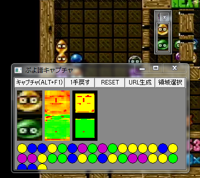

・説明 PCの画面からぷよ譜を作成するアプリケーションです。 ゲームのリプレイモードや動画からぷよ譜を作成出来ます。 標準の設定で、ぷよぷよ通、ぷよぷよテトリス、ぷよぷよフィーバー（クラシック）、ぷよぷよVS、の動画からぷよ譜を作れる事を確認しています。 設定を弄る事で、細かい調整やおそらくは他の機種への対応も可能です。 ※このアプリケーションは常に最前面で動作します。 ＜使い方＞ １．PuyoChartCapture.exeを起動 ２．「領域選択」ボタンからウィンドウを表示し、移動やサイズ変更を行いNEXTを丁度囲みます（スクリーンショットを参考） ３．「キャプチャ」ボタンを押すかAlt+F1でキャプチャ範囲のイメージからぷよの組を生成します ４．３.を繰り返し、満足したら「URL生成」ボタンでクリップボードにぷよ譜をコピーします ・補足 ウィンドウに表示されている画像は、左から順に 「1. キャプチャした生画像」 「2. 1.から色相を抽出した画像（HSVモデルのH成分）」 「3. 2.からしきい値を元にマッピングした画像」です。 3.で面積の占める割合が一番大きな色をぷよの色として判定しています。 ・ダウンロードver0.3 Download
ver0.2 Download
ver0.1 Download